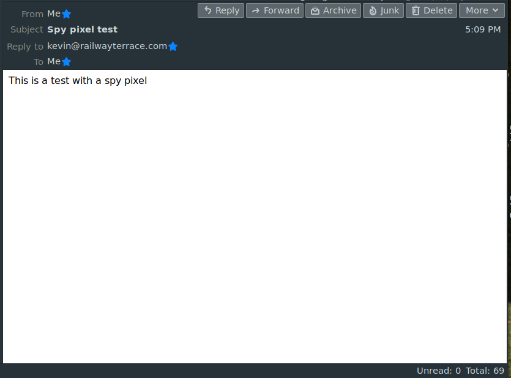

"Spy pixels" -- how worried should we be?
 "Spy pixels" or "tracking pixels" are in the news right now. That's not
because the technology is new -- it's been around for at least
twenty years. Rather, it's because privacy advocates have lately realized
just how prevalent the practice of email tracking is. According to
BBC News, more than 70% of email messages now contain
tracking information. Spy pixels are, in outline, tiny images
embedded in the body of an email message, that cause a request to be
made on a specific web server. That request allows the operators
of the server to
make certain inferences about the reader of the message, as I will
demonstrate.
"Spy pixels" or "tracking pixels" are in the news right now. That's not
because the technology is new -- it's been around for at least
twenty years. Rather, it's because privacy advocates have lately realized
just how prevalent the practice of email tracking is. According to
BBC News, more than 70% of email messages now contain
tracking information. Spy pixels are, in outline, tiny images
embedded in the body of an email message, that cause a request to be
made on a specific web server. That request allows the operators
of the server to
make certain inferences about the reader of the message, as I will
demonstrate.
Is this a cause for concern? Or just another aspect of the modern Internet that all but the most paranoid of will just shrug our shoulders over?
I'm not going to attempt to answer that question. Rather, I'm going to explain in detail how email tracking works, by showing the actual data that is passed between the email clients, email servers, and web servers involved in the process. You, the reader, can make your own mind up about how scared to be.
Email tracking and spy pixels
A spy pixel, or tracking pixel, is a reference to a remote image inserted into an email message by the sender. This isn't an email attachment -- it's an instruction to the email client to fetch the image from a server somewhere. The sender is usually a bulk emailer, typically working on behalf of a commercial enterprise, and usually involved in aggregating personal data for advertising purposes. When you read the email, your email client or web browser requests the image and, in so doing, passes some data to the server that contains the image. That data -- and I'll show later what it is -- can be used for various purposes, with varying degrees of legitimacy.
Background -- a bit of history
Until the mid-1990s or thereabouts, an email message was simply a
block of plain, undecorated text. We'd use a specialized mail
client to send and receive messages. These clients were usually
console-based programs like mailx, that could themselves
only handle character data. The only formatting that this kind of
email allowed was the use of spaces and line breaks to create a text
layout.
In due course, graphical mail clients were developed, like Pegasus Mail and Microsoft Outlook. They were, at that time, still handling the same kind of email messages, but in a way that made managing emails more palatable to non-technical folk.
With the rise of graphical desktop systems, two related things happened, at about the same time.
First, email messages stopped being plain text, and started to become web pages. More precisely, they became HTML documents. HTML is the markup language used to describe the contents of web pages. Using HTML allowed for greater flexibility and control over layout, as well as things like font, text colour, and so on. It also made it possible to embed images in email messages, in the same way that this is done for web pages. I'll give a specific example later.
Second, custom email clients started to be supplanted by web-based mail interfaces. This was both a cause and a consequence of the move to HTML-based messaging. After all, a web browser already has a way to render HTML documents -- that's what it's for. It requires little extra effort to make a web browser into an email client.
These days, email clients and web-based email interfaces exist side-by-side; desktop clients like Thunderbird and Evolution are handling exactly the same kind of email documents as Google's GMail web interface. For better or worse, the use of spy pixels will be the same on both kinds of software.
Embedding image links in HTML messages
When we send email messages in HTML format, we probably don't work with the HTML code directly. Most likely, in fact, we never see it. The email client will provide some kind of editor, that will let us enter text and images, and will generate the HTML internally.
However, to understand how spy pixels work, we have to see some HTML.
Here is the HTML text of a message I've sent to myself, followed by a screenshot that shows how the message looks when I read it using Thunderbird (or, in fact, any other email client).
<html>
<head>
<meta http-equiv="content-type" content="text/html; charset=UTF-8">
</head>
<body>
<img
src="http://kevinboone.me/img/spy.png?id=123456789" alt=""
width="1" height="1"/>
This is a test with a spy pixel<br>
</body>
</html>

The ordinary text "This is a test with a spy pixel" is rendered
as just that -- plain text. Most of the other markup --
head, body, etc., just defines the sections
of the HTML document, and isn't really relevant to our purposes here.
What is relevant is the image specification. That's this part of the document:
<img
src="http://kevinboone.me/img/spy.png?id=123456789" alt=""
width="1" height="1"/>
This is an instruction to the email client (which might be a web browser)
to display an image. The image data is not in the document, but to
be obtained by making a request on a web server. The request will be
made on the server kevinboone.me, and will be for the
reference
/img/spy.png?id=123456789. In this reference,
/img/spy.png is the location of the image on the server,
and id=123456789 is just some data sent along with the
request for the image. This data doesn't affect the image, it's simply
sent with the request to the server. I'll explain shortly why
this is important.
The image itself is one pixel wide and one pixel high and, in this case, transparent. That's why, in the screenshot of Thunderbird, you don't actually see any image. It doesn't even change the layout of text, it's that tiny.
Examining the server request
Now let's see what happens when the email client renders the HTML message. It can handle the text itself, but it has to go off to a webserver to get the image.
Here's the actual data that the email client sends to the webserver. The details will differ from one set-up to another -- there would be no purpose to spy pixels if they didn't -- but the basic outline will always be the same.
GET /temp/spy.png?id=123456789 HTTP/1.1 Host: kevinboone.me User-Agent: Mozilla/5.0 (X11; Linux x86_64; rv:68.0) Thunderbird/68.8.0 Accept: image/webp,*/* Accept-Language: en-US,en;q=0.5 Accept-Encoding: gzip, deflate Connection: keep-alive If-Modified-Since: Wed, 17 Feb 2021 17:08:36 GMT If-None-Match: W/"163-1613581716000"
So what does the server learn, by receiving this message? First, and probably most important, it can determine that I read the email. Or, at least, that my email client did. Whether I actually read it thoroughly, or took some action on the basis of it, can't be determined reliably, but I can't deny that the message arrived and was processed by my email client.
Second, the server knows what email client I'm using (Thunderbird), what operating system (Linux), and roughly what kind of computer I'm using (x86_64 -- probably some kind of PC-like machine). It could tell, using the same information fields, if I was using a mobile device and, broadly, what kind.
Third, the server gets some idea how long the email sat unread in my inbox. It can estimate this because it knows when it sent the email, and when my client rendered it.
Fourth -- and this isn't obvious from the data snippet above -- the server learns the IP number (Internet address) of the client. This will give at least an approximate geographical location. In practice, the IP number is more likely to identify my Internet Service Provider's location than mine, but the server will at least know what country I'm in, and likely what region. The server might be able to do much better than that, but to do so requires coordinating information across multiple sources, not just spy pixels.
But wait... hows does the server know who I am? There's nothing in the reqest sent from the email client that identifies me personally, right? Well, actually, there is. That's where the "id" field comes in.
Email messages that contain tracking data are not usually sent by hand -- they are sent in bulk by automated mailing systems. When the mailer sends the email, it will record in some database who it sent it to, what the message contained, at what time, and for what purpose. The database will store the contents of the "id" field (or some other unique identifier), and the mailer will add that ID to to the image request in the email. By that means, the server that receives the request will know exactly to whom, and for what purpose, the corresponding email was sent. The ID might also be added to other links in the email, as I'll explain shortly.
How this tracking technology is used
The archetypal use of email tracking, and the one that generates the most controversy, is in bulk emails for advertising purposes. Suppose I want to run an email advertising campaign, and gauge how effective it was. My bulk mailer will send a huge number of emails, to everybody on a distribution list, and each one will have a unique ID. When the recipients read the email, my server records that they did so.
In the body of the email, I might include links to my main website, where recipients can buy the advertised product, if they are so moved. These links will also contain the ID that I assigned to the spy pixel, and that ID will be logged when the reader clicks the link. As a result, I know three things that are very important to an advertiser:
1. The number of people who were sent my email;
2. The number of people who read it (and when);
3. The number of people who were inspired to follow it up.
As an advertiser, this is highly relevant data. By comparing (1) and (2) I can gauge how effective my email subject lines are at getting the reader's attention (and whether the emails are getting through the spam filter). By comparing (2) and (3) I can see whether my advertisement is actually inspiring follow-ups. To some extent, I can gauge the effectiveness of my advertising campaign in different regions.
The consequences of spy pixels
"Spy pixels" aren't doing anything that an ordindary web page can't do. In fact, the technique relies for its operation on the fact that email messages are now effectively web pages.
What's different, though, is that when I tell my browser to look at a website, I have at least made some kind of decision to do so. Once I've opened a specific page, if it's ill-behaved and instrusive it might open all sorts of new pages in pop-up windows. If I'm foolish enough to fall for the click-bait, who knows where I might end up (nowhere good, in most cases). In any case, though, I've given some sort of consent to the content I receive, even ill-informed consent.
Email is different. Of the several hundred emails I receive every day, all but 5-10 are unsolicited. Advertisers buy and sell vast email distribution lists, with thousands of (often unwilling) potential recipients. As a minimum, the use of spy pixels allows the maintainers of such lists to estimate which of the email addresses in their lists actually reach a real, live recipient.
So one consequence of the use of spy pixels, for better or worse, is that it perpetuates the practice of unsolicited mailing. After all, a list of a thousand know-good email addresses is worth more than a million unknowns. If there was no way for bulk mailers to know whether their messages were reaching anybody, the practice would be less prevalent than it is.
It's worth pointing out that a spy pixel doesn't have to be a pixel -- any image will do. It could be a company logo, for example. The use of single-pixels follows from the fact that spy pixels are inserted in bulk into emails using specialized software, and are usually distinct from the content of the message. It is the secretiveness of tracking pixels that is partly responsible for the irritation they engender, but there's nothing inherently secretive about the technique.
In summary, at least one consequence of the use of spy pixels is that they support the mass-mailing industry. Whether that's a good thing or a bad one, I'll leave you to make up your own mind.
What about privacy?
From looking at the data capture above, we can see that the amount of personal information collected by the use of spy pixels is actually fairly small -- they tell the sender of the email that you read it (or at least opened it), and whether you followed up an advertising email with a visit to a specific site. The sender of the email can get a very approximate idea of your location. In the long term, email tracking provides a picture of your responses to particular kinds of advertising, but only of the kind that is delivered by email.
A greater concern, perhaps, is how spy pixels can be used in combination with other data-collection techniques -- advertising cookies, perhaps. Advertising data aggregators are huge, and highly pervasive. They use a variety of techniques to link data obtained from different sources. It's difficult for people outside that industry to know exactly how much personal data is being held, and by whom.
How to block spy pixels
This is nearly always easy. All email clients I know of provide a method by which they can be told to request permission from the user before displaying images. One of the reasons I favour Thunderbird is that it behaves that way out of the box. When it displays an email message, by default Thunderbird will only display text. It will prompt the user for permission to display anything else. For convenience, you can tell Thunderbird always to display images from known senders, or specific senders.
The GMail app I use on my cellphone has the same capability, but it's not enabled by default -- I have to find it by hunting through several levels of menu. But, again, once it's enabled, GMail won't show images without asking permission.
Some email clients, and plug-ins for email clients, purport to offer more intelligent blocking behaviour, perhaps by maintaining a list of known trackers. It's not possible to block an image on the basis of its size or characteristics, because the client has to make a request on the server to get that information, which is exactly what we need to avoid.
Conclusions
I draw no conclusions. My aim is simply to provide enough technical information that readers can make their own determination of the risks involved, and whether to mitigate them.